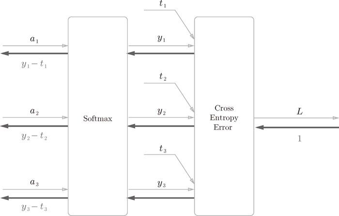
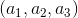
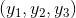
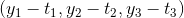

，Cross Entropy Error 层输出损失 L。
，Cross Entropy Error 层输出损失 L。这里，我们给出 softmax 函数和交叉熵误差的计算图，来求它们的反向传播。softmax 函数称为 softmax 层，交叉熵误差称为 Cross Entropy Error 层，两者的组合称为 Softmax-with-Loss 层。先来看一下结果，Softmax-with-Loss 层可以画成图 A-1 所示的计算图。

图 A-1 Softmax-with-Loss 层的计算图
图 A-1 的计算图中假定了一个进行 3 类别分类的神经网络。从前面的层输入的是 ，softmax 层输出 。此外，教师标签是 ，Cross Entropy Error 层输出损失 L。
如图 A-1 所示，在本附录中，Softmac-with-Loss 层的反向传播的结果为 。